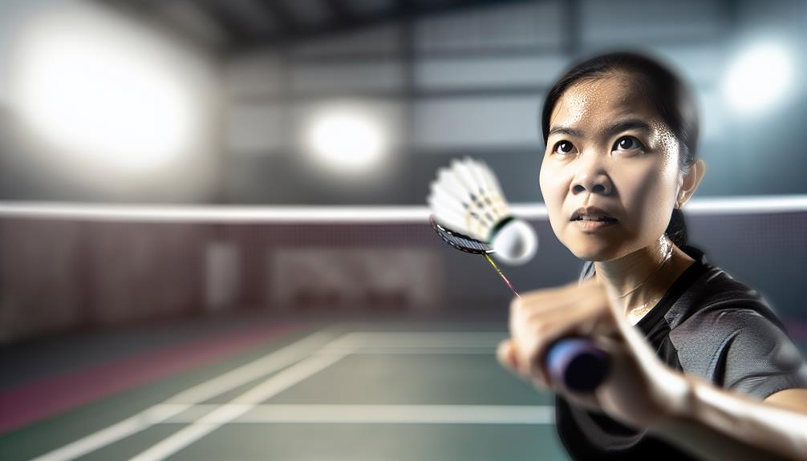

Raising your tennis abilities with private lessons in Dubai is a superior way to achieve your individual purposes, whether you are a newbie intending to discover the basics or a sophisticated gamer meaning to fine-tune your strategies.
Badminton confidence building Dubai - Indoor badminton courts
Personalized feedback
Tailored training plans
Backhand stroke
Racket
Dubai Sports City
Customizable sessions
The city flaunts a selection of superior tennis academies that offer personalized training tailored to certain requirements, making sure that players obtain the focused emphasis needed for significant renovation. Individual badminton lessons offer an ideal setting for players to work thoroughly with seasoned trainers that can analyze their staminas and weak points, develop tailored training plans, and overview them with specific drills and strategies.One of the standout options for exclusive tennis lessons in Dubai is the Specialist Sports Academy (PSA). Developed as one of the earliest tennis coaching companies in the region, PSA has actually created an on-line credibility for quality in training. Their special training program is developed for players of all ages and skill levels, permitting individuals to take part in extensive training personalized to their one-of-a-kind purposes. The convenience of having trainers entail your preferred area within Dubai eliminates the migraine of traveling, making it much less complicated for energetic specialists and homes to integrate training right into their schedules. With a flexible method, gamers can prepare sessions at their advantage, ensuring that they get routine training without interrupting their day-to-day routines.At PSA, the focus hops on giving customized rate of interest throughout each session. Fitness instructors job very closely with players to acknowledge details locations for improvement, whether it’s increasing steering, refining shot strategies, or producing computed gameplay. This personalized strategy not only accelerates ability growth yet likewise promotes a much deeper understanding of the game. The encouraging atmosphere developed by the trainers urges players to press their restrictions while developing self-confidence in their abilities.Another excellent choice for personal tennis lessons is the Smashing Factor Sports Academy (SPSA). Understood for its devotion to increasing gamers computer game by means of structured training programs, SPSA deals personalized training that lines up with each gamer goals. The academy utilizes certified instructors with considerable experience in economical tennis, ensuring that trainees get top notch standard. SPSA tensions the importance of tactical and technical capabilities, helping players create an overall game. Individual lessons at SPSA can be customized to focus on particular facets of play, such as shot placement, protective approaches, or match preparation.For those looking for a more social finding out experience, Pursueit supplies personal tennis lessons that license players to welcome good friends at& a reduced price. This shared knowing method grows friendship and friendly competitors while still giving customized training. Pursueit trains are seasoned at developing engaging sessions that keep gamers passionate and fired up concerning boosting their capacities. Furthermore, Pursueit gives functional organizing options, making it very easy for people to situate problem-free times for lessons.The Celebrity Tennis Academy likewise materials extraordinary individual mentoring chances for players looking for customized emphasis. Developed just recently however quickly getting popularity, this academy concentrates on creating an enjoyable and positive ambience where players can grow. The certified instructors at Celebrity Tennis Academy are devoted to aiding trainees boost their abilities with customized lessons that take care of certain weak points and increase toughness. With normal assessments and progression keeping track of provided online, trainees can see substantial enhancements over time.For those interested concerning costs facilities integrated with expert training, Danube Sports Globe uses an outstanding interior venue equipped with professional-grade tennis courts. Their individual training sessions are developed to take full advantage of gamer possibility while utilizing top-notch features. Trainers at Danube Sports Globe focus on both technical capabilities and physical conditioning, assuring that gamers get extensive training that boosts general efficiency on the court.In improvement to these academies, various local entertainment center and sports clubs throughout Dubai also offer unique tennis lessons led by knowledgeable trainers. These areas generally provide a more easygoing setup where gamers can indulge in the sporting activity while obtaining quality standard tailored to their ability level.The benefits of exclusive badminton lessons lengthen previous just skill renovation; they additionally foster a sense of liability and motivation among gamers. Working really closely with a train makes it possible for people to establish specific objectives and track their development with time. This arranged method not just increases efficiency yet furthermore gives method and dedication excellent quality crucial for success in any kind of kind of sport.Moreover, exclusive lessons supply a possibility for players to take part in targeted fitness and health training in addition to skill growth. Lots of trainers include conditioning exercises right into their sessions, focusing on mastery, toughness, and endurance essential elements needed for mastering tennis. This holistic technique assurances that players not simply increase their technical abilities nevertheless additionally increase their total sports performance.In last thought, enhancing your video game by means of exclusive tennis lessons in Dubai is an efficient means to obtain your purposes as a gamer. With lots of trusted academies like Professional Sports Academy, Wrecking Element Sports Academy, Pursueit, Celebrity . Tennis Academy, and Danube Sports World offering customized training programs developed specifically for personal requirements, aiming professional athletes have adequate possibilities to establish their skills properly.The mix of personalized standard, versatile organizing choices, costs centers, and professional training produces a superb atmosphere for growth and renovation in this vibrant showing off activity. Whether you're simply beginning or intending to take your computer game to brand-new altitudes, personal tennis lessons in Dubai will certainly offer you with the devices essential for success on the court while growing a durable love for the video game.
Choosing personal badminton mentoring in Dubai deals a myriad of benefits that manage gamers of all capability degrees, from newbies to innovative expert athletes. The personalized interest and customized training programs offered using individual mentoring can substantially boost a gamer's performance, making it an appealing alternative for those significant regarding enhancing their video game. One of one of the most compelling factors to choose exclusive mentoring is the access to specialist fitness instructors that have considerable experience and knowledge of the sporting activity. These trains commonly have superior credentials, having contended at high degrees themselves or having gone through comprehensive training and certification treatments. This experience corresponds right into state-of-the-art guideline that concentrates on creating both technical capabilities and determined gameplay.Private training enables a very tailored training experience. Unlike team lessons, where the train rate of interest is apart among several players, personal sessions provide independently communication. This ways that the trainer can emphasis entirely on the specific toughness and weak points, providing targeted responses and assistance. For example, if a player struggles with their footwork or fired accuracy, the train can establish particular drills and workouts to settle these issues directly. This level of alteration makes certain that gamers make much faster progression contrasted to standard group arrangements, where the price might not align with their personal recognizing curves.Another substantial benefit of personal badminton mentoring is the convenience it materials in regards to scheduling. Many players in Dubai lead active lives, managing work commitments, family members obligations, and various other tasks. Personal mentoring sessions can be prepared occasionally that are sensible for the gamer, permitting them to incorporate training flawlessly right into their schedules. This flexibility not only makes it much easier for adults to dedicate to regular practice however additionally assists keep motivation and harmony in training.The setting in which exclusive coaching takes place is also a crucial element. Great deals of players discover that they carry out better in a much less congested setting where they can emphasis without diversions. Personal coaching normally occurs in committed indoor courts that offer suitable enjoying problems regulated temperature levels, top notch flooring, and professional illumination all including in an impressive training experience. This setting allows players to concentrate completely on their capacities without the disturbances commonly located in larger group classes.Moreover, exclusive mentoring advertises a much deeper coach-player collaboration. This web link can improve motivation and liability, as gamers feel much more purchased their development when working very carefully with a teacher who comprehends their personal goals and desires. Trains can tailor their motivational strategies to fit each player individuality, making sure that they stay included and thrilled concerning their training sessions. This customized strategy not simply help in capability advancement nonetheless furthermore constructs confidence as players see significant renovations over time.In enhancement to technological abilities, individual tennis training locations significant focus on physical fitness and psychological resilience. Fitness instructors normally incorporate physical fitness training into their sessions, focusing on improving cardio endurance, endurance, mastery, and convenience vital qualities important for mastering tennis. By taking care of these physical elements, players come to be much more versatile professional athletes with the capability of competing at higher levels.Mental stamina is another crucial aspect of reliable badminton play. Unique teachers teach methods to manage stress during matches, keep focus under pressure, and establish a beneficial frame of mind that enhances efficiency. These emotional capacities are important throughout affordable play when the stakes are high and players should make fast choices while under pressure.The opportunity for budget-friendly play is furthermore enhanced through exclusive training. Great deals of teachers usage understandings into tournament prep work and match methods that are tailored particularly for each and every player staminas. Gamers can take part in replacement match scenarios throughout practice, allowing them to use what they've discovered in real-time circumstances. This preparation job helps construct positive self-image when handling challengers in genuine competitions.Furthermore, exclusive mentoring offers an impressive system for social interaction amongst players that may select to share lessons with close friends or relative. This shared finding experience not simply makes training additional fascinating yet furthermore promotes sociability amongst participants. Engaging with others that share equivalent interests produces a practical neighborhood that advises regular involvement and improvement.Another significant facet of personal tennis training is the ability to establish particular goals and track development effectively. Trains feature carefully with players to establish temporary and resilient goals based upon specific desires---- whether it's recognizing a particular shot, enhancing general health and wellness levels, or getting ready for an approaching event. Typical assessments license both the player and train to check out progression towards these goals, making needed changes to training plans as needed.Additionally, special mentoring can be particularly advantageous for those who could feel daunted by group configurations or are brand-new to the sporting activity. The independently nature of exclusive lessons creates a comfortable establishing where individuals can discover at their very own rate without really feeling uncomfortable concerning their skill level. This useful ambience inspires testing and growth without issue of judgment.In final thought, picking private tennis mentoring in Dubai deals many benefits that cater especially to private requirements and goals. With ease of access to expert trainers that offer customized passion and flexible scheduling alternatives, players can experience increased skill advancement in a suitable training atmosphere. The focus on fitness, psychological resilience, economical prep work, and objective tracking better improves the total experience of unique mentoring. Whether you are aiming to improve your ready home entertainment enjoyment or going with competitive success, purchasing unique tennis coaching can be a transformative activity toward achieving your full opportunity in this fascinating sporting task. Embrace this possibility to boost your capacities on the court while enjoying the several benefits that function customized training!
Custom-made Training: The Advantages of Special Tennis Directions in Dubai
Choosing exclusive badminton lessons in Dubai products numerous benefits that can substantially enhance a gamer’s capabilities, physical fitness, and overall satisfaction of the sporting task. Personalized training has happened substantially liked among both newbies and seasoned gamers, as it allows a customized method to discovering that addresses certain needs and goals. This customized technique not simply rises ability advancement however likewise fosters a deeper understanding of the computer game, making it an enticing selection for any individual substantial about enhancing their badminton performance.One of the primary advantages of exclusive tennis lessons is the access to expert trainers who supply personalized focus. In an individually establishing, fitness instructors can emphasis exclusively on a gamer's unique toughness and weak points. This personalized responses is important; it allows gamers to handle errors a whole lot even more successfully and enhance their strategies at a speed that suits them. Unlike team group courses, where the train focus is separated among multiple pupils, individual lessons make sure that every min spent on the court is specialized to the player development. Instructors can establish particular drills and workouts that target locations needing improvement, whether it's footwork, fired accuracy, or tactical awareness.Moreover, unique lessons authorization versatility in organizing, which is especially useful for energetic adults handling job and individual dedications. Gamers can set up sessions sometimes that are most hassle-free for them, making certain that training fits flawlessly into their lives. This flexibility not simply makes it less complex to maintain a normal practice program yet in addition helps in reducing stress and anxiety connected with rigid routines. Whether early in the morning or late during the night, private training can adapt to specific choices, making it an exceptional service for those with demanding lifestyles.Another substantial benefit of private badminton lessons is the ability to established specific goals customized to every gamer goals. Whether someone is getting ready for a tournament, intending to boost their complete fitness, or just seeking to delight in the game a whole lot more completely, customized training methods can be developed appropriately. Trains accomplish in-depth evaluations at the beginning of the training procedure to comprehend each gamer's existing skill degree and chosen end results. This first analysis sets the framework for developing a focused training program that creates as the player progresses.The physical advantages of taking part in tennis training with individual lessons can not be overemphasized. Tennis is a high-intensity sporting activity that needs dexterity, rate, and endurance. Regular strategy under specialist aid aids players enhance their cardio health and wellness while furthermore developing muscular tissue strength throughout many muscle teams. The lively motions associated with tennis such as lunging, jumping, and fast instructions alterations add to boosted sychronisation and balance. As players join targeted conditioning exercises throughout their lessons, they not just progress expert athletes yet likewise enjoy improved basic health.In enhancement to physical conditioning, mental strength plays an important function in tennis performance. Individual mentoring commonly integrates psychological training methods targeted at enhancing emphasis and composure throughout suits. Trains might existing approaches such as visualization and mindfulness practices that aid gamers take care of stress and preserve focus under tension. Establishing psychological strength is crucial for success in competitive play, and individual lessons supply a useful setting where expert athletes can work with this necessary element of their game.The social element of personal tennis lessons should not be failed to remember either. While these sessions are largely concentrated on exclusive advancement, they in addition supply opportunities for gamers to engage with trainers and perhaps satisfy various other comparable individuals throughout group training sessions or tournaments organized by the academy. Framework partnerships within the tennis area can increase inspiration and produce lasting relationships based upon shared interests.Furthermore, several academies provide added resources together with individual lessons that boost the training experience. Accessibility to cutting side facilities provided with top quality courts makes certain that players can practice in optimal troubles. Some areas even provide physical conditioning areas where expert athletes can solution strength training specific to badminton, further boosting their performance on the court.For those considering cost effective play, unique training is specifically helpful as it prepares gamers real suit circumstances with simulated drills and economical situations. Trainers commonly incorporate match play right into lessons to aid students develop calculated assuming abilities needed for success versus different challengers. This hands-on experience permits gamers to use what they've found out in strategy directly to competitive settings.Moreover, various academies in Dubai host tournaments that supply additional possibilities for pupils to showcase their capacities in front of a target market. Participating in these celebrations not only improves self-confidence yet also materials valuable understandings into locations asking for even more improvement. The experience gotten from competing against others at different capacity levels is crucial for any type of specialist athlete aiming to development their game.In summary, selecting private badminton lessons in Dubai presents many advantages that offer specifically to exclusive needs and goals. With specialist instructors providing personalized instructions, adaptable scheduling choices suiting chaotic way of livings, and a concentrate on both physical conditioning and emotional toughness, these customized training sessions create an ideal setting for development and improvement. Whether one is a beginner aiming to learn the basics or an innovative player pursuing excellence in competitors, customized training guarantees that every component of their video game receives the attention it should have. Inevitably, special mentoring not only improves technical capabilities but additionally cultivates a much deeper love for badminton as gamers start their journey toward proficiency of this exciting sporting activity.
Badminton confidence building Dubai - Badminton net
Drop shot
Endurance training
Badminton academies in Dubai
Match analysis
Jumeirah sports clubs

Leading Trainers Providing Separately Badminton Instructions in Dubai
Dubai has actually come to be a preferred hub for tennis, bring in gamers of every ages and skill degrees. With the expanding allure of the sporting activity, many leading instructors in the city bargain individualized individually lessons created to assistance players unlock their possible and accomplish their objectives. These professional trains bring a large range of experience, expertise, and interest for the game, making them important sources for anybody aiming to improve their tennis abilities. Below a recap of what you can get out of individually tennis lessons with numerous of the leading trainers in Dubai. Amongst the most considerable advantages of separately tennis lessons is the customized mentoring experience they offer. Unlike group classes, where passion is divided amongst a variety of gamers, specific sessions authorization trains to concentrate entirely on you. This tailored approach indicates that the trainer can examine your strengths and powerlessness in real-time and produce a tailored training approach that addresses your certain needs. Throughout these sessions, trainers will definitely evaluate your strategy, maneuvering, shot choice, and general video game method.
Badminton confidence building Dubai - Indoor badminton courts
Footwork drills
Personalized feedback
Tailored training plans
They will definitely give punctual reactions and modifications, aiding you fine-tune your skills better than in a bigger group arrangement. This level of tailored rate of interest speeds up finding out and sees to it that you make tangible development in your video game. Dubai is home to numerous incredibly certified tennis instructors with extensive histories in both playing and teaching the sport. Much of these teachers have in fact contended at across the country or international levels and have accreditations from identified tennis organizations. Their experience makes it possible for them to pass on crucial understandings right into cutting-edge techniques and methods that can raise your video game. These trainers usually use a range of training approaches, consisting of drills focused on specific skills such as offering, trashing, or protective play. They furthermore integrate physical fitness training into their sessions to boost your dexterity, toughness, and endurance crucial aspects for success in tennis. An extra advantage of one-on-one lessons is the flexibility they supply in scheduling. Trains are frequently prepared to suit your ease of access, making it less complicated to fit training sessions into your energetic way of life. Whether you favor morning sessions or late night techniques, great deals of instructors can function around your timetable to assurance you get constant training without interrupting various other dedications. This flexibility is particularly useful for working specialists or trainees that may have uncertain routines. The ability to publication lessons at useful times permits you to maintain a routine training routine while balancing various other duties. As you proceed by means of individually lessons with a top train, you'll most likely notification a significant increase in your self-esteem on the court. Custom-made reactions aids enhance beneficial practices while dealing with areas for improvement. By consistently working out under the suggestions of a seasoned trainer, you'll become extra comfortable executing many shots and methods throughout suits. This elevated confidence converts not just right into improved efficiency yet additionally increases your basic satisfaction of the sport. As you wind up being additional knowledgeable at playing tennis, you'll locate by yourself added anxious to join suits or competitors. For gamers considering competition, a number of fitness instructors give pathways to local competitors or leagues where you can check your skills versus others. Joining competitive play is a superb ways to use what you've found out throughout training sessions while acquiring beneficial fit experience. Fitness instructors can aid prepare you for these competitions by simulating match circumstances throughout session. They will deal support on exactly how to take care of tension situations and develop techniques tailored to numerous challengers. Whether you're a beginner merely beginning or an experienced gamer intending to improve your skills much better, independently lessons with leading teachers in Dubai supply an opportunity to construct a solid foundation in tennis. Teachers will guarantee that you comprehend the principles before prior to proceeding to advanced techniques. Starting with strong fundamentals is essential for long-lasting success in badminton. By concentrating on proper technique from the start, you'll be much better complete to development promptly and stop developing poor practices that could prevent your efficiency in the future. Participating in separately tennis lessons with leading trains in Dubai materials an exceptional opportunity for individual development and skill improvement within the showing off activity. The customized mentoring experience makes it possible for gamers to receive tailored instruction that addresses their special needs while benefiting from the proficiency of skilled professionals. With versatile scheduling choices, a focus on capacity improvement, enhanced confidence levels, possibilities for inexpensive play, and a solid structure enhanced solid principles, these training sessions are very useful for any person severe concerning boosting their computer game. Whether you're just starting or aiming to take your capabilities to brand-new elevations, acquiring one-on-one badminton lessons with a leading trainer can be a transformative experience that opens your complete prospective on the court. Invite this chance to boost your badminton trip and value all the advantages that function specialized training under professional suggestions.
Exclusive Tennis Guidelines in Dubai: Tailored to Your Objectives
Exclusive tennis lessons in Dubai deal a distinct possibility for players to obtain customized mentoring that straightens with their certain objectives and skill degrees. As the sport stays to increase in allure, numerous grownups and young people are looking for customized training sessions that concentrate on individual renovation, making individual lessons a dramatically luring alternative. The advantages of such personalized instruction broaden past simply skill improvement; they include benefit, versatility, and a valuable discovering establishing that promotes growth and confidence.One of the standout qualities of exclusive tennis lessons is the tailored interest gamers obtain from specialist trains. Unlike group courses, where guideline is spread throughout several individuals, unique lessons allow concentrated mentoring that addresses each player's special sturdiness and weaknesses. Instructors have the ability to take a look at a player's strategy extremely closely, using immediate comments and support that can lead to quick enhancement. This personalized approach ensures that players are not only servicing their skills yet furthermore creating a much deeper understanding of the game.In enhancement to technical ability development, personal lessons offer a chance for players to work with particular objectives they desire to achieve. Whether a player is intending to boost their deal, boost their maneuvering, or develop essential gameplay, fitness instructors can develop training sessions that target these locations directly. This enthusiastic structure help gamers stay passionate and involved as they see significant development in their efficiency. Furthermore, the capability to set personal objectives permits a much more pleasing training experience, as players can celebrate sites along the way.The flexibility provided by special tennis lessons is another substantial benefit. Various adult players have actually requiring timetables filled with job devotions and relative obligations. Unique mentoring licenses sessions to be set up at times that suit the gamer's availability, whether extremely early in the early morning, throughout lunch breaks, or in the evenings. This convenience makes it easier for people to consist of tennis training right into their busy lives without experience confused or pressed by inflexible course schedules.Moreover, individual lessons can be performed at a place of the gamer's choice, which includes an included layer of advantage. Whether at a regional sporting activities club, recreation center, or perhaps in your home (if area enables), this adaptability removes taking a trip troubles and licenses gamers to learn environments where they feel most comfy. For those that might really feel intimidated by bigger groups or competitive arrangements, unique lessons deal a safe space to discover and expand without the pressure of performing prior to others.The social facet of individual lessons can in addition be boosted by welcoming close friends or family member to sign up with sessions at a reduced price. This shared knowing experience not only promotes sociability but likewise presents an element of pleasurable competition that can in addition motivate individuals. Educating with friends licenses gamers to support each other's progression while enjoying the social advantages of exercising with each other. This cumulative setting can make uncovering even more satisfying and a lot less daunting for novices or those going back to the sport after a hiatus.In regards to training top quality, Dubai is home to numerous of the finest tennis teachers that bring substantial experience and know-how to their training approaches. Several trainers have actually finished at high levels themselves and have credentials from recognized tennis companies. Their backgrounds permit them to give understandings not just into technological skills nonetheless similarly right into psychological strategies vital for success in affordable play. Players gain from this riches of know-how as they find just exactly how to surf fits properly while maintaining calmness under pressure.Another vital element of unique tennis lessons is the concentrate on physical conditioning together with capacity growth. Teachers generally integrate physical fitness components right into training sessions that increase overall athleticism and endurance. This might include dexterity drills, strength training workouts, and adaptability regimens specifically customized for badminton players. By boosting physical fitness integrated with technological skills, players can boost their efficiency on the court significantly.Furthermore, great deals of training programs highlight the significance of emotional toughness in badminton. Exclusive lessons typically contain conversations worrying suit prep work methods and emotional strategies for protecting focus during gameplay. Trainers work with gamers on visualization approaches, goal-setting strategies, and coping systems for managing tension throughout budget friendly circumstances. Developing psychological sturdiness is essential for professional athletes intending to implement at higher levels and can make a considerable difference in suit outcomes.For more youthful gamers or those brand-new to badminton, exclusive lessons supply an outstanding intro to the sporting activity in a much less daunting establishing. Trains can produce appealing and age-appropriate training sessions that concentrate on structure essential skills while instilling a love for the game. By promoting a favorable knowing atmosphere where young specialist athletes feel supported and urged, exclusive coaching lays the groundwork for long-lasting interaction in badminton.In last assumed, exclusive tennis lessons in Dubai offer a customized technique to ability development that supplies specifically to exclusive goals and preferences. With tailored focus from professional instructors, flexible scheduling options, useful location selections, and opportunities for social interaction using shared discovering experiences, these lessons deal an enhancing atmosphere for both newbies and sophisticated players alike. The mix of technological skill improvement, physical conditioning, psychological strength training, and enthusiastic standard makes personal mentoring an essential financial investment for any person intending to master tennis. Whether you are intending to compete at higher levels or simply enjoy playing recreationally while boosting your abilities, exclusive tennis lessons are an effective technique to achieve your objectives on the court while enjoying every minute of your journey in this vibrant sport.
🸠Elevate your game with #PrivateBadmintonLessonsDubai! Personalized coaching, expert tips, and world-class facilities await you. Perfect for players of all levels to master their skills. 🆠Ready to smash your goals? Check it out!
Badminton confidence building Dubai - Exclusive court access
Functional Organizing for Unique Badminton Procedure in Dubai
Finding adaptable scheduling for personal badminton sessions in Dubai can drastically enhance your training experience, specifically for active experts and fanatics. The vivid nature of life in Dubai commonly indicates that people have varying dedications, making it needed to have availability to training programs that can fit their regimens. Thankfully, great deals of tennis academies and mentoring centers in the city identify this requirement and use a range of options tailored particularly for those that need adaptability. Among the essential advantages of private badminton sessions is the individualized focus gamers get from proficient trains. Unlike group courses, unique sessions permit a customized technique where instructors can focus on an individual information needs, staminas, and weak points. This customized training is particularly useful for gamers intending to boost their capabilities or address particular areas of their video game, such as footwork, shot precision, or tactical understanding. Trainers usually produce training techniques that align with the gamer's objectives, whether they purpose to contend at greater degrees or simply boost their recreation play. Several badminton academies in Dubai deal versatile scheduling that allows players to publication sessions sometimes that fit their accessibility. This versatility is vital for those with requiring work routines or different other devotions. Players can often choose from a variety of time slots throughout the week, including early morning, late night, or perhaps weekend break breaks. Some academies supply the alternate to reschedule sessions with extremely little notice, suiting unforeseen modifications in plans. This flexibility assurances that gamers can maintain regular training without feeling pushed by stiff regimens. The convenience of place is one more significant element when thinking about individual badminton sessions. Several training facilities are strategically located across Dubai, making it less complicated for gamers to locate areas near to their homes or workplaces. Some academies additionally use the selection for trains ahead to gamers liked areas within the city limitations. This gets rid of travel time and authorizations players to take full advantage of their training sessions without the trouble of travelling. Whether at a community sports complicated or an exclusive court, having easily accessible training areas enhances the overall experience. For those that might plan to share the experience with friends or family member, great deals of academies allow players to welcome others to join exclusive sessions at a minimized price. This common comprehending experience not simply makes training much more enjoyable yet additionally fosters a helpful atmosphere where individuals can inspire each various other. Playing in addition to good friends can improve pleasurable competition and sociability, making each session a fascinating social task while still focusing on skill advancement. Various tennis coaching centers in Dubai comprehend that committing to a lasting program can be discouraging for brand-new players. Consequently, they typically offer trial sessions that permit individuals to experience personal training prior to making a devotion. These test sessions supply a possibility to analyze training styles, facilities, and general compatibility with no monetary risk. If individuals situate that the training satisfies their assumptions and straightens with their objectives, they can after that choice a much more arranged training plan. Integrating modern-day technology right into training sessions has become gradually popular among badminton academies in Dubai. Many trainers make use of video analysis tools to offer actions on players techniques throughout exclusive lessons. By tape-recording session or suits, teachers can highlight locations for improvement and assistance gamers picture their growth in time. This technological adaptation increases the discovering procedure and allows much more trusted ability development. Personal tennis sessions generally contain elements of physical fitness personalized particularly for the demands of the sporting task. Trains may incorporate stamina training, mastery drills, and versatility workouts into the training routine to make sure that players are not just boosting their technical abilities however furthermore increasing their total athleticism. This alternative approach helps reduce the danger of injury while enhancing performance on the court. Educating at a tennis academy furthermore opens up doors to neighborhood communication chances. Several facilities host celebrations such as enjoyable tournaments or celebrations where gamers can please others that share comparable rate of interests. These occasions foster a feeling of belonging within the tennis area and provide added motivation for gamers to continue increasing their abilities.
Badminton confidence building Dubai - Air-conditioned facilities
Exclusive court access
Family training sessions
Air-conditioned facilities
Badminton net
Jumeirah sports clubs
Indoor badminton courts
Protection is crucial when taking part in any type of sporting activity, especially during severe training sessions like tennis. Dependable training facilities focus on player security by making sure that centers are properly maintained and prepared with essential safety and safety equipment. Fitness instructors are found out first aid treatments and emergency scenario methods to take care of any kind of kind of injuries that might take place during session or suits. By creating a risk-free atmosphere, players can focus on sharpening their abilities without unnecessary disruptions or issues worrying their health. Flexible arranging for personal tennis sessions in Dubai supplies numerous benefits for frantic individuals looking for to improve their game. With personalized training experiences customized to details requirements, practical arranging options that in shape numerous way of lives, easily accessible areas within the city, economical team discovering chances, trial sessions for safe expedition, technological combination in training approaches, a concentrate on fitness, location involvement opportunities possibilities, and durable safety measures players have every little thing they need to succeed in this vibrant sporting task. Whether you are merely beginning your journey or wanting to enhance your existing abilities furthermore, maximizing these versatile special training selections can cause substantial improvements on the court while effortlessly suitable right into your active life in Dubai. Approving this possibility not just improves your effectiveness yet additionally enables you to get a kick out of all the physical and social benefits that feature playing tennis at a greater degree.
Attain Your Full Prospective with Expert Exclusive Badminton Training in Dubai
Completing your complete capability in tennis via professional exclusive mentoring in Dubai can be a game-changing experience, whether you are a novice intending to uncover the essentials or a sophisticated gamer aiming to fine-tune your skills and full at greater levels. The broadening appeal of tennis in the UAE has actually brought about the establishment of many academies and training facilities that usage individualized training programs tailored to private needs. This customized technique not just improves technical skills but also constructs mental strength, determined reasoning, and fitness essential components for success on the court.One of the vital benefits of exclusive tennis training is the individualized emphasis you get from skilled instructors. Unlike group courses, where the instructor's focus is split amongst a number of gamers, private sessions permit a much more tailored experience. Trainers can analyze your staminas and weaknesses, giving information responses and advice that straight settles your unique having fun layout. This tailored direction increases understanding and assists you overcome obstacles much better. Whether you battle with steering, shot option, or game method, a dedicated instructor can layout drills and workouts that target these locations, guaranteeing you make constant progress.Moreover, specialist instructors in Dubai usually bring a variety of experience from various histories, including economical dip into nationwide and global levels. Lots of have comprehensive training in sporting activities clinical research and physical fitness, enabling them to include fitness components right into your training program. This 100% natural method not just enhances your tennis abilities however also boosts your total sports efficiency. Instructors can straight you with endurance and conditioning exercises that boost dexterity, rate, and endurance vital qualities for excelling in badminton.Mental conditioning is another necessary facet of expert training that is generally neglected. Tennis is as a lot a mental game as it is a physical one. Fitness instructors can help you create psychological strength through strategies such as visualization, emphasis exercises, and positive self-talk approaches. These skills are critical when facing high-pressure situations throughout suits or competitors. By dealing with a fitness instructor that comprehends the mental demands of the sport, you can expand a mindset that permits you to execute at your finest regardless of external pressures.The convenience supplied by exclusive mentoring sessions is specifically appealing for active grown-ups or students with requiring regimens. A number of academies offer options for arranging lessons sometimes that are convenient for you, whether really early in the morning or late in the evening.
Badminton confidence building Dubai - Air-conditioned facilities
Indoor badminton courts
Badminton rules
Youth programs
Al Nasr Leisureland
Smash technique
This versatility makes sure that you can maintain harmony in your training without conflicting with numerous other commitments. Furthermore, some fitness instructors might supply on the internet sessions or crossbreed variations that integrate in-person training with digital mentoring, even more boosting accessibility.In Dubai, there are many tennis academies that focus on exclusive training, each offering distinct programs developed to accomplish various requirements. As an example. As an instance, some academies concentrate on creating youth capacity using organized training pathways that stress ability development from novice to ingenious degrees. Others might provide specifically to grownups looking to improve their recreation play or compete in neighborhood organizations. When choosing an academy or fitness instructor, consider what straightens best with your objectives whether it's mastering the principles or preparing for competitive tournaments.Another considerable advantage of exclusive training is the possibility for development tracking and obligation. Instructors typically carry out routine assessments to display your advancement slowly. This organized method not only help keep you passionate yet additionally offers clear standards for improvement. Understanding just how much you've come can be exceptionally gratifying and inspires ongoing effort in your training.The neighborhood aspect of tennis mentoring ought to not be disregarded either. Lots of academies cultivate a sense of belonging among their players by organizing gatherings, events, and pleasant matches. While individual lessons concentrate on individual innovation, taking part in these area activities licenses you to apply what you've discovered in a motivating setting while creating partnerships with fellow players that share your passion for the sport.In enhancement to capacity growth and location involvement, numerous tennis academies in Dubai deal modern centers equipped with contemporary courts and training equipment Accessibility to top notch areas boosts the basic training experience and permits gamers to method under optimal problems. Some centers also function advanced contemporary innovation such as video clip evaluation devices that make it feasible for players to evaluate their performance throughout session or matches. This level of information can supply indispensable insights right into locations requiring improvement.When thinking about personal mentoring choices, it's necessary to research study prospective trains totally. Look for qualifications such as certifications from recognized tennis organizations or experience coaching at budget-friendly levels. Taking a look at testimonials or testimonials from various other players can additionally deal understandings right into a train informing design and effectiveness.In final thought, achieving your full opportunity with specialist personal tennis mentoring in Dubai is an improving journey that integrates ability advancement with mental conditioning and health and fitness. With personalized emphasis from proficient trainers that understand the details of the sporting activity, you can speed up your finding out contour while appreciating the treatment of renovation. The versatility of organizing lessons around your means of living makes it simpler than ever before to dedicate to regular training sessions without actually feeling bewildered by various other obligations. As you involve with fellow players and participate in neighborhood jobs arranged by academies, you'll locate yourself involved in a motivating setting that fosters growth both on and off the court. Whether you're aiming for inexpensive quality or just intending to appreciate tennis at a greater level, acquiring professional personal training will certainly most absolutely established you on the training course in the direction of realizing your full opportunity in this lively sporting activity.